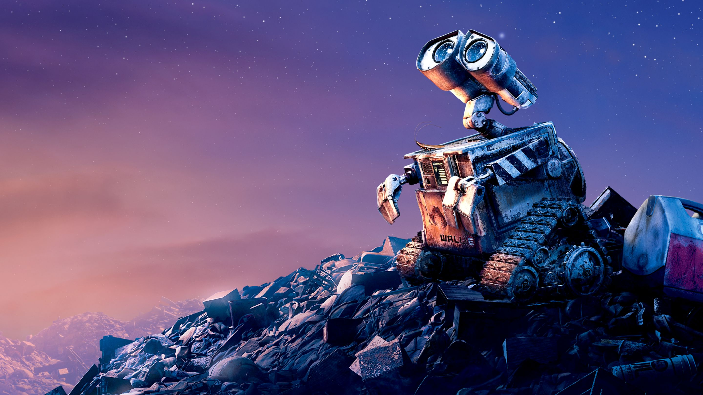

Sobre
Wall-e é um pequeno robot extrovertido que tem como missão limpar a terra dos detritos humanos. Por estar sozinho à séculos, desenvolveu uma personalidade curiosa e peculiar.
Wall-e a olhar as estrelas
Traços de Personalidade
- Divertido
- Curiosos
- Altruista
Amigos
Ao longo das suas aventuras, o Wall-e foi fazendo vários amigos, entre eles